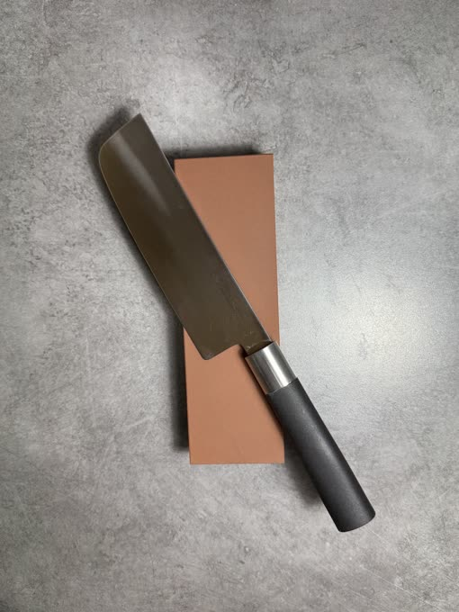
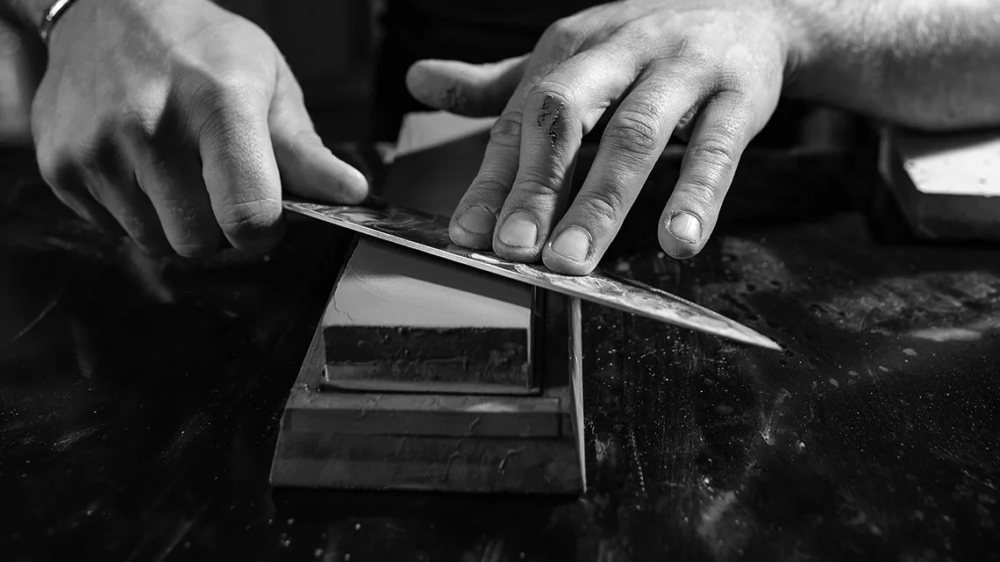

Foto Cuchillo japonés Gyuto
Afilado de precisión en Valencia
Afilado manual en piedras de agua
Afilado a mano para cuchillos japoneses y otros cuchillos de cocina de calidad. Elijo cómo trabajar el filo tras revisar la geometría y el estado de la hoja.
PresupuestoPersonalizado
Plazo orientativoSegún el trabajo
El presupuesto y el plazo se confirman al valorar la hoja. Precios con IVA incluido.
Calle Maestro Guerrero, 4 · ValenciaGeometría y filo
La diferencia está en el detalle
En la piedra puedo ajustar el ángulo y la presión desde el talón hasta la punta. Así trabajo la arista según la forma de la hoja y el desgaste de cada tramo.
El estado del filo marca la secuencia de piedras. Un repaso y una corrección de desgaste irregular requieren pasos distintos.
Cada hoja, su valoración
Qué cuchillos trabajamos
- Cuchillos japoneses
- Gyuto, Santoku, Nakiri y otros perfiles de cocina.
- Cuchillos de cocina de calidad
- Valoro también cuchillos europeos y otras hojas de uso doméstico o profesional.
- Geometrías delicadas
- Reviso las hojas de un solo bisel y otras geometrías complejas antes de decidir cómo trabajar el filo.
Del examen al corte
El proceso
Inspección de la hoja
Reviso la geometría, el desgaste y el estado de la arista.
Selección de piedras
Elijo el grano de cada piedra y el orden en que voy a utilizarlas.
Afilado a mano
Ajusto el ángulo y la presión en cada tramo y retiro la rebaba en el acabado.
Comprobación del filo
Reviso la continuidad de la arista y compruebo el corte con una prueba adecuada al cuchillo.
Del archivo del taller
Trabajo real


Antes de traer tu cuchillo
Si tienes dudas sobre tu hoja, envíame fotos para orientar la valoración.
¿Todos los cuchillos japoneses requieren afilado a mano?
El método depende de la geometría, del estado de la hoja y del uso del cuchillo. La forma o el origen por sí solos no determinan el tratamiento.
¿Se puede valorar un cuchillo con mellas?
Sí. Primero hay que revisar el daño y cuánto material se tendría que retirar. Tras la valoración te diré qué trabajo es viable para tu pieza.
Calle Maestro Guerrero, 4 · Valencia
Consulta personalizada
Envíame una foto de cada cara de la hoja y cuéntame cómo la utilizas. El presupuesto depende del estado, la geometría y el trabajo necesario. Te confirmaré el plazo al valorar la pieza.
Llamar al +34 614 00 50 53Guerrero, 4
Ver ubicación en Google Maps
- Lunes a viernes
- 10:00–14:00 / 17:00–20:00
- Fin de semana
- Consulta disponibilidad
Confirma el horario antes de desplazarte si necesitas una atención concreta.